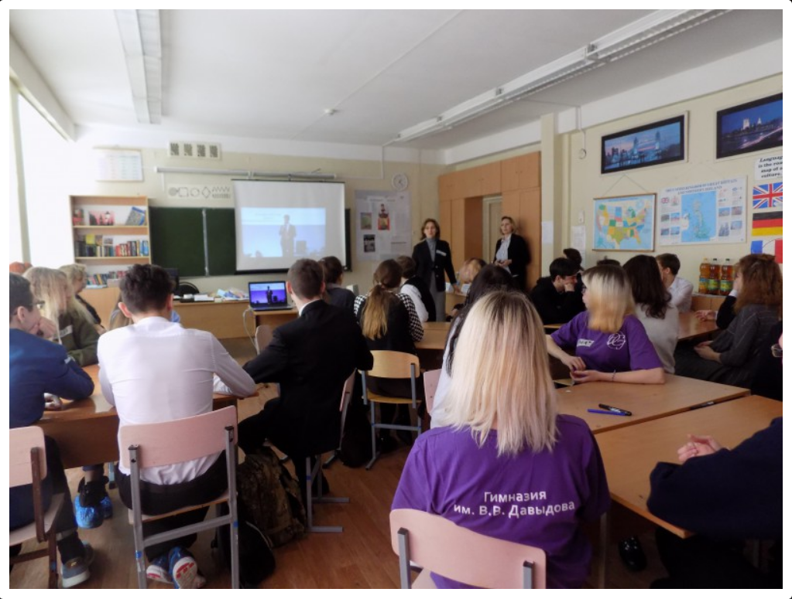

Заявка на грант Фонда президентских грантов · 2-й конкурс 2026
Городские
фестивали
профессиональных проб по робототехнике
для школьников Набережных Челнов
Заявитель: Гимназия им. В.В. Давыдова · г. Набережные Челны, Республика Татарстан
Глобальные тренды: Развитие технологий (робототехника, нейросети, автоматизированные линии) радикально меняет формат работы с техникой. На первый план выходит ультимативное требование к качеству инженерного мышления — способности не просто обслуживать, но и проектировать, управлять сложными интеллектуальными системами. Формирование такого мышления со школьной скамьи сегодня — ключевое условие сохранения технологического суверенитета страны.
Региональная потребность: Современная промышленность испытывает колоссальный кадровый голод. Это критично для крупных индустриальных кластеров — Набережных Челнов, Елабуги (ОЭЗ «Алабуга»), всего Татарстана и России в целом. Экономика региона, опирающаяся на промышленных гигантов (таких как ПАО «КАМАЗ»), остро нуждается в поколениях инженеров с развитым системным мышлением.
Источники: Указ №309, 2024 — цель 100 роботов / 10 000 работников к 2030 г. · Нацпроект «Средства производства» — 350 млрд руб. · Стратегия НТР, Указ №803 — интел. труд · Минпромторг РФ (дефицит 2 млн инженеров)
Цикл из 4 городских фестивалей профессиональных проб по робототехнике на базе школ г. Набережные Челны. Каждый фестиваль — 50 участников, 8–10 кл., практика + живой контакт с индустрией.
Почему именно этот формат — обосновано наукой и практикой ФПГ
Метод профессиональных проб — доказанный инструмент профориентации (ИНСТРАО РАО, методрекомендации Минпросвещения 2019). Исследования НИУ ВШЭ (2021–2023): практики в 7–10 раз эффективнее пассивного просвещения.
Технические практики активируют сразу несколько систем мозга, развивают «послепроизвольное внимание» и служат доказанным противоядием клиповому мышлению (иссл. UCSF/IJMRA, КубГУ по нейропластичности).
ФПГ системно поддерживает этот подход: «Технобол» (2025), «33Ампера» (2021), «Инж. каникулы» (2022) — все победители с формулой: 100% практика + наставники с производства + измеримый результат.
Исполнитель проекта
Первая частная школа Республики Татарстан (осн. 1990)
35-летний опыт системы развивающего обучения Эльконина — Давыдова. Единственная школа в регионе, выстроившая сквозную методологию формирования теоретического и проектного мышления на всех ступенях:
Проектные лаборатории + конференция «Малые Давыдовские чтения».
Кванториум, IT-Парк; профильные технологические смены.
Кейсы для развития коммуникативных компетенций подростков.
Краеведческий исследовательский проект (история Н.Челнов).

По 50 участников на каждом · пробы + встречи с инженерами + деловые игры
Черная линия — проходной балл (68).
Предварительная Оценка в соответствие с 10 критериями ФПГ. Проходной балл (1–5 млн руб.): 68 / 100.
⚠ ВНИМАНИЕ
Лаконичный план закрытия уязвимостей проекта с ожидаемым приростом баллов от ФПГ (на основе практик успешных грантополучателей).
Слабое место: Нет описания грантовой истории НКО и профилей команды.
А. Опираться на 35-летний опыт
Гимназии — детально расписать компетенции педагогов (сертификаты РО,
организация
конференций).
Б. Привлечь опытную НКО-партнера для подачи совместной заявки (зонтичный
бренд
— гарантирует максимум по критерию).
Слабое место: Нет детального бюджета; риск «проекта-закупки железа».
Заложить в бюджет оплату методистов и разработчиков проф. проб — показать создание тиражируемого интеллектуального продукта. Оборудование — лишь инструментарий. Прописать измеримые KPI (рост интереса к инженерии на X%).
Слабое место: Нулевой задокументированный вклад в черновиках.
А. Оцифровать имеющиеся ресурсы: рыночная
стоимость
аренды помещений Гимназии + волонтёрский труд наставников.
Б. Гарантийное письмо от ПАО
«КАМАЗ»: мерч, расходники, экскурсии, время инженеров-наставников.
Слабое место: Нет публичного присутствия проекта в сети.
Лендинг на Tilda (1 день) + 5–7 публикаций на официальных ресурсах Гимназии и в городских СМИ Набережных Челнов. Результаты опроса 148 школьников — готовый контент.
Основа: Повысить интерес к инженерии у 200 учеников 8–10 кл. (на базе Гимназии).
Аутентичность: Заменить стоковые иллюстрации на реальные фото
учеников и процессов Гимназии.
Ожидаемые результаты: Вывести количественный (200 чел.) и
качественный эффект отдельным слайдом/блоком.
Верификация: Прикрепить к заявке скан-копии писем поддержки от
школ-партнеров и ПАО «КАМАЗ».
Фокус: Сократить плотность текста на вводных слайдах, оставив
выжимку.
Приложение — Перечень мероприятий проекта «ТехноСтарт»
| Этап | Сроки | Мероприятия | Ожидаемый результат |
|---|---|---|---|
| Этап 1 Подготовительный |
01.02 — 15.03.2025 | Разработка программы профпроб, материалов и сценария фестиваля | Готовые программы; наборы оборудования |
| 01.02 — 01.04.2025 | Формирование команды: набор волонтёров и наставников | 5 педагогов; 10 наставников с производства | |
| 01.02 — 15.03.2025 | Изготовление оборудования, приобретение расходников | 3 комплекта; 1 комплект запасных | |
| 01.03 — 01.04.2025 | Информационная кампания: школьники 8–10 кл., родители, СМИ | Охвач аудитории 200+ чел. | |
| Этап 2 4 Фестиваля |
15.04 — 30.04.2025 | Фестиваль I: профпробы, встречи с инженерами, деловые игры | 50 участников, вход/выходное анкетирование |
| 01.09 — 30.09.2025 | Фестиваль II | 50 участников | |
| 01.10 — 31.10.2025 | Фестиваль III | 50 участников | |
| 01.11 — 30.11.2025 | Фестиваль IV | 50 участников — итого: 200 уч. за цикл | |
| Этап 3 Подведение итогов |
10 — 25.12.2025 | Итоговое анкетирование 150 участников | Данные о росте интереса к инж. профессиям |
| 15 — 25.12.2025 | Сборник работ (20 уч. × 50 стр.) | Изданный сборник участников | |
| 15 — 30.12.2025 | Отчётная публикация в 5 СМИ | Публичный отчёт; 5 статей | |
| Этап 4 Аналитика |
10.01 — 31.01.2026 | Отчёт по KPI (цель: ≥ 30% уч. выбрали инж. направление) | Отчёт для ФПГ |
| 10.01 — 15.02.2026 | Финансовый отчёт, акты оснастения спонсора | Закрытая (сданная) отчётность | |
| 15.02 — 28.02.2026 | Методическое пособие для тиражирования | Готовое пособие (30+ стр.) | |
| Этап
5 Масштабирование |
01.05 — 31.05.2027 | Тиражирование на 6+ городов РТ (вкл. Елабуга, НнК)ч | Охват ≥ 20 мун. образован.организаций |
| 01.05 — 31.05.2027 | Открытые материалы курса (опубликованы) | Свободный доступ; возм. подача след. гранта |
Приложение 2 — Инфографика результатов опроса